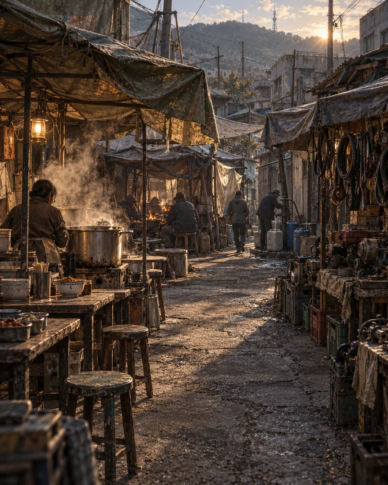

밀양 장터DAY 1 · 17:51 · 맑음
↗
갈 곳을 골라 주세요물 16식량 14고철 24차체 82%
김 오르는 솥 앞에 앉아
장꾼들 이야기를 듣는다.
경운기 부품과 정비
영옥과 장꾼들
물통 줄과 천막 안쪽
양산 → 밀양같은 원경 · 같은 차량 · 전환만 비교


 CSS 전환 연출 예시 · 실제 캔버스 아님
CSS 전환 연출 예시 · 실제 캔버스 아님연료 ∞차체 82%맑음0/5
풍경이 사라지지 않고 지나가게
하늘·도로·차량은 유지하고, 지형만 옆으로 이어집니다. 실제 연결 때는 원경·중경·근경을 서로 다른 속도로 움직입니다.
반투명 비교는 문제를 설명하는 예시이며 현재 렌더러의 정확한 복제는 아닙니다. 자동 왕복 없이 한 번 재생합니다.